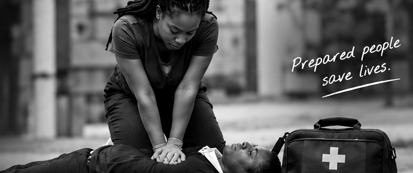
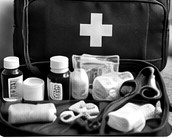

FOUNDATION
The first 60 seconds
A practical overview of scene safety, responsiveness, airway, breathing, circulation and escalation.
LifeCue turns essential first aid knowledge into calm, visual, step by step guidance for common emergencies designed to be useful before professional help arrives.

Start with the closest match. Each guide explains what to look for, what to do first, what to avoid, and when to seek urgent professional help.
LifeCue gives one clear action at a time. The demonstration format pairs a simple illustration with numbered steps so a user can understand the sequence at a glance.
Short learning modules help you recognise emergencies and understand the purpose behind each response step.
A practical overview of scene safety, responsiveness, airway, breathing, circulation and escalation.
Learn a simple sequence for deciding what needs attention first.
Understand the everyday supplies that can support basic first aid.
Know where your first-aid kit is, keep important contacts accessible, understand your local emergency process, and make a plan for people who may need additional support.

Do not rush into a hazard. Look for traffic, fire, electricity, violence or other immediate danger.
Use an appropriate verbal and physical check while keeping the situation calm.
Breathing concerns can require urgent professional assistance. Follow appropriate emergency guidance.
Escalate early when the situation is severe, worsening or beyond basic first-aid support.
LifeCue is a simple emergency-response assistant. Its interface is built around one principle: when people are stressed, information should become easier to scan, not harder.
The product separates urgent actions from background education, uses demonstrations where a visual explanation is useful, and keeps escalation guidance visible.
Plain language and one action at a time.
Consistent patterns across emergency topics.
Clear limits and professional escalation.
Readable, responsive and easy to navigate.